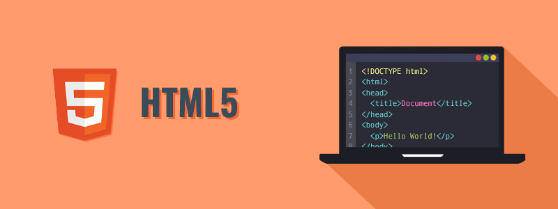

Belajar HTML Dasar
Hypertext Markup Language (HTML) adalah bahasa markah standar untuk dokumen yang dirancang untuk ditampilkan di peramban internet. Ini dapat dibantu oleh teknologi seperti Cascading Style Sheets (CSS) dan bahasa scripting seperti JavaScript dan VBScript.
Peramban internet menerima dokumen HTML dari server web atau dari penyimpanan lokal dan membuat dokumen menjadi halaman web multimedia. HTML menggambarkan struktur halaman web secara semantik dan isyarat awal yang disertakan untuk penampilan dokumen.
HTML dapat menyematkan program yang ditulis dalam bahasa scripting seperti JavaScript, yang memengaruhi perilaku dan konten halaman web. Dimasukkannya CSS mendefinisikan tampilan dan tata letak konten. World Wide Web Consortium (W3C), mantan pengelola HTML dan pemelihara standar CSS saat ini, telah mendorong penggunaan CSS pada HTML presentasi eksplisit sejak 1997.[1]
Belajar CSS Dasar

Cascading Style Sheet (CSS) merupakan aturan untuk mengatur beberapa komponen dalam sebuah web sehingga akan lebih terstruktur dan seragam. CSS bukan merupakan bahasa pemograman.
Cascading Style Sheet (CSS) merupakan aturan untuk mengatur beberapa komponen dalam sebuah web sehingga akan lebih terstruktur dan seragam. CSS bukan merupakan bahasa pemograman.
CSS dapat mengendalikan ukuran gambar, warna bagian tubuh pada teks, warna tabel, ukuran border, warna border, warna hyperlink, warna mouse over, spasi antar paragraf, spasi antar teks, margin kiri, kanan, atas, bawah, dan parameter lainnya.[1] CSS adalah bahasa style sheet yang digunakan untuk mengatur tampilan dokumen.[2] Dengan adanya CSS memungkinkan kita untuk menampilkan halaman yang sama dengan format yang berbeda.[2]
Belajar JS Dasar

JavaScript (/ˈdʒɑːvəˌskrɪpt/[9]) (disingkat JS) adalah bahasa pemrograman tingkat tinggi dan dinamis.[10] JavaScript populer di internet dan dapat bekerja di sebagian besar penjelajah web populer seperti Google Chrome, Internet Explorer (IE), Mozilla Firefox, Netscape dan Opera. Kode JavaScript dapat disisipkan dalam halaman web menggunakan tag SCRIPT.[11] JavaScript merupakan salah satu teknologi inti World Wide Web selain HTML dan CSS. JavaScript membantu membuat halaman web interaktif dan merupakan bagian aplikasi web yang esensial.
Awalnya hanya diimplementasi sebagai client-side dalam penjelajah web, kini engine JavaScript disisipkan ke dalam perangkat lunak lain seperti dalam server-side dalam server web dan basis data, dalam program non web seperti perangkat lunak pengolah kata dan pembaca PDF, dan sebagai runtime environment yang memungkinkan penggunaan JavaScript untuk membuat aplikasi desktop maupun mobile. JavaScript adalah merek dagang yang dikeluarkan dari Oracle Corporation di Amerika Serikat.[12][13]